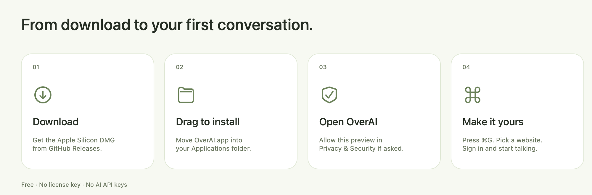

Download OverAI.
Get the Apple Silicon DMG from the official GitHub release. You don’t need an OverAI account, license key, or AI API key.
Apple Silicon · macOS 14 or later · Completely free
This preview is not notarized by Apple. First-launch approval may be needed.
Get the Apple Silicon DMG from the official GitHub release. You don’t need an OverAI account, license key, or AI API key.
Open the downloaded DMG. Drag OverAI onto Applications and wait for it to finish copying. Eject the disk image afterward.
Updating? Quit OverAI before copying, then choose Replace if Finder asks. Existing native-app website sessions stay in place.
Open Finder → Applications → OverAI. Choose Show OverAI or Start Hidden. Optional microphone setup can be skipped. If macOS blocks opening, follow the steps below.
Choose a website, sign in, and start your conversation. Change your shortcut in Settings → General, and customize your websites in Settings → Websites.
The preview is ad-hoc signed and has not been notarized by Apple. macOS cannot verify it as an identified-developer release. Only approve it if you trust the official download and have checked its published checksum.
macOS saves the exception for future launches. If the button is missing, try opening the app again and return to Privacy & Security. A managed Mac may prohibit exceptions; ask its administrator.
Apple’s first-launch guidance ↗
For advanced users only. Prefer Open Anyway above. Use this only for a
trusted, checksum-verified official preview already installed in
/Applications.
First check that the bundled signature is intact:
codesign --verify --deep --strict --verbose=2 "/Applications/OverAI.app"If verification fails, stop and download a fresh copy. An ad-hoc signature check confirms consistency, not the developer’s identity or absence of malware.
Then remove only OverAI’s quarantine attribute and open the app:
xattr -dr com.apple.quarantine "/Applications/OverAI.app"
open "/Applications/OverAI.app"
This bypasses the quarantine-based first-launch check for this app. It
does not notarize, scan, or repair it. Do not run the command on a
whole folder or disk, disable Gatekeeper, or use
xattr -cr to clear every attribute. No
sudo is included; if permission is denied, use the macOS
approval flow or contact support.
Use your app’s exact path if you installed it elsewhere. “No such xattr” means the attribute is already absent; it does not prove that the app is safe.
Download SHA256SUMS.txt from the
same release. Run this in Terminal:
cd ~/Downloads
shasum -a 256 OverAI-3.0.1-3005-preview-arm64.dmgThe full 64-character result must match the DMG line in SHA256SUMS.txt. A checksum detects changed content; it does not replace trust in the source.
Provider accounts and usage limits remain separate. Capture protection depends on your macOS and recording setup.